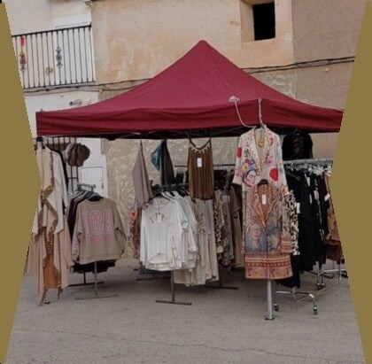
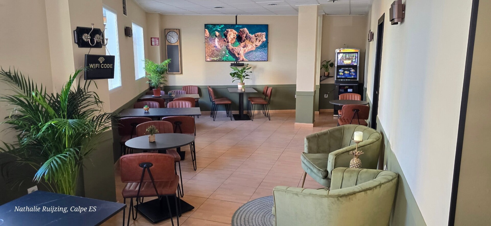
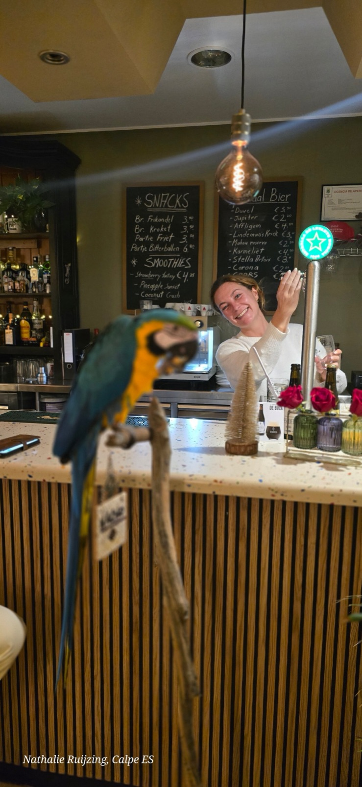
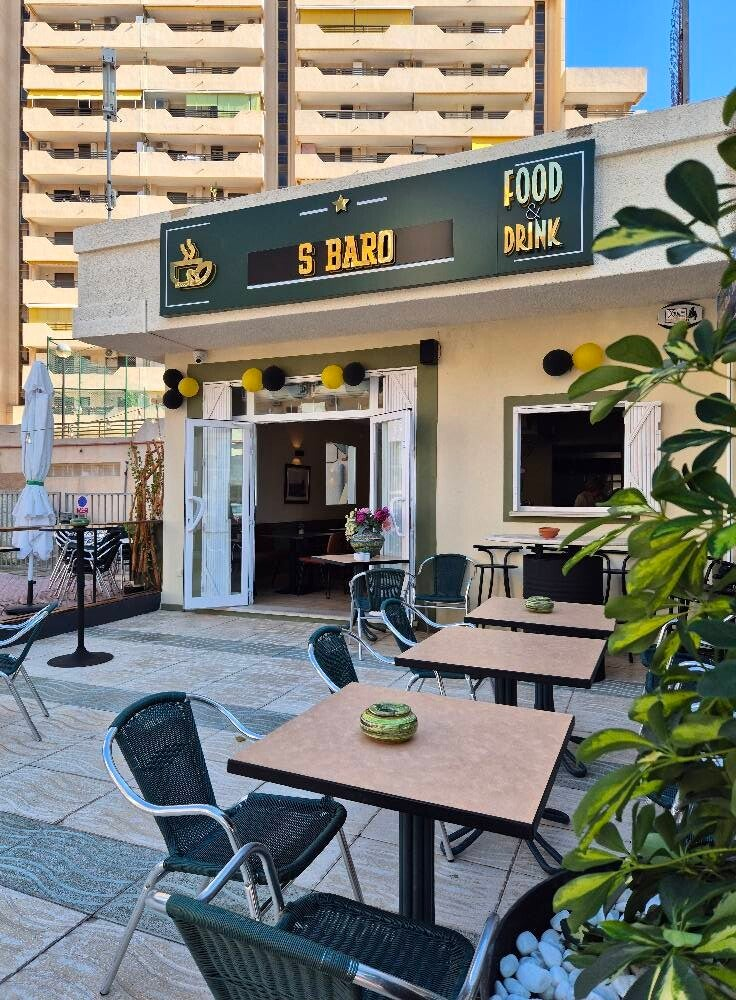
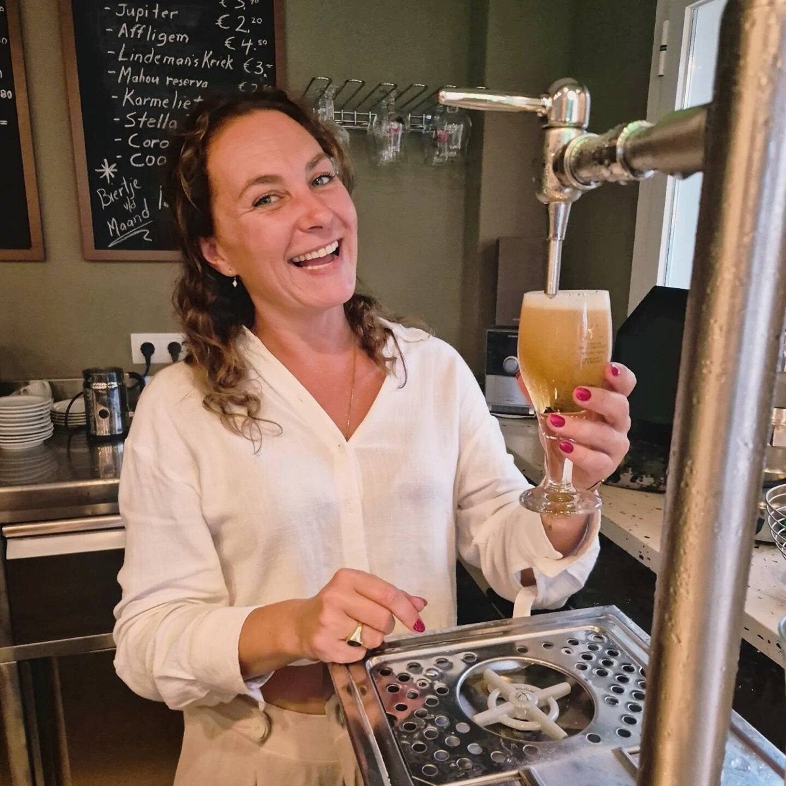

Kledingmarkt
Corina Schouten zet geregeld haar kraam bij ons op. Mooie, betaalbare kleding van goede kwaliteit, en de collectie wisselt vaak.



Een goede koffie, een koud speciaalbiertje en altijd iemand om mee te praten. Kom binnen, schuif aan, en blijf zo lang als je wilt.
Un café con alma.
Bij S Baro hoef je niemand te kennen. Esra zorgt dat je je meteen thuis voelt, of je nu op vakantie bent, hier overwintert of om de hoek woont.
Binnen een warme zaal met fauteuils, buiten een terras onder de Spaanse zon. En op de bar zit soms een gast met veren die graag even meekijkt.

Koffiespecialiteiten, speciaalbier van de tap en uit de fles, wijn en een biertje van de maand.
Formule 1, voetbal, de Tour. De belangrijke wedstrijden kijk je bij ons samen.
Vakantiegangers, overwinteraars en buren aan dezelfde bar. Zo leer je Calpe pas echt kennen.
Wat is er mooier dan je favoriete wedstrijd met een koud drankje, een warm hapje en gezellige mensen om je heen?
Kwalificatie op zaterdag, de race op zondag: we zetten hem op. Staat jouw wedstrijd er niet bij? Zeg het even aan de bar of stuur een berichtje, dan gaat het scherm aan.
Wat er deze week op staat, zetten we op onze Facebook-pagina.
Zo stond het laatst op het bord achter de bar. De kaart wisselt mee met wat jullie lekker vinden, dus kijk vooral ook op het bord zelf.
★ Biertje van de maand: La Chouffe, € 4,25
Verder natuurlijk koffie en thee, wijn, cava, sterke drank en fris. Prijzen kunnen wijzigen; het bord in het café is leidend.

Corina Schouten zet geregeld haar kraam bij ons op. Mooie, betaalbare kleding van goede kwaliteit, en de collectie wisselt vaak.

Verjaardag, jubileum of een besloten borrel: je kunt het café afhuren. Bel, sms of app Esra voor de mogelijkheden.
App over je feest
Karaoke, feestdagen met tapas, markten. De data zie je op het bord en op Facebook.
Volg S Baro op FacebookIk ken Esra al jaren en ik weet hoe ze de sfeer maakt bij S Baro. Ik kan niet genoeg benadrukken hoe geweldig de sfeer en service hier zijn. Een aanrader voor iedereen die van gezelligheid en een drankje houdt.Nathalie
| Maandag | 15:00 – 22:00 |
|---|---|
| Dinsdag | 15:00 – 22:00 |
| Woensdag | 15:00 – 22:00 |
| Donderdag | Gesloten |
| Vrijdag | 15:00 – 22:00 |
| Zaterdag | 15:00 – 22:00 |
| Zondag | 15:00 – 22:00 |
Avda. Rosa de los Vientos 16
03710 Calpe, aan de La Fossa-kant